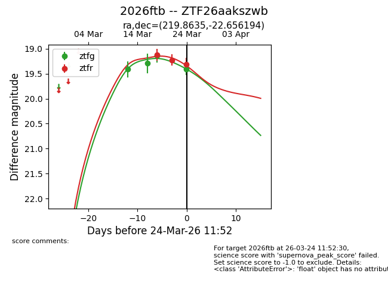
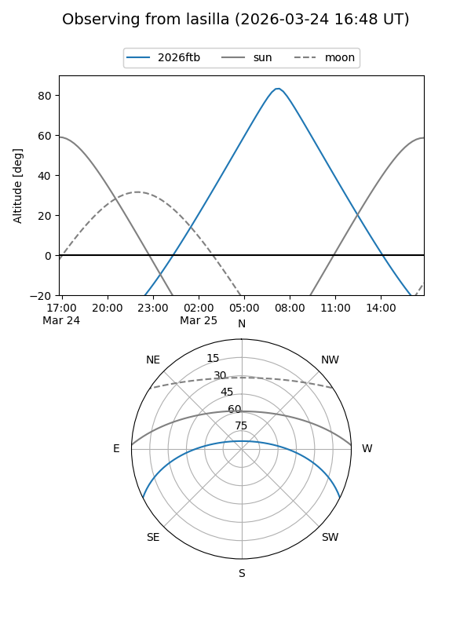
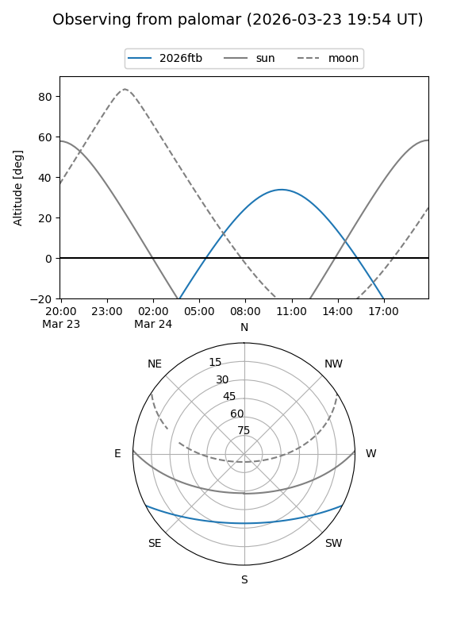
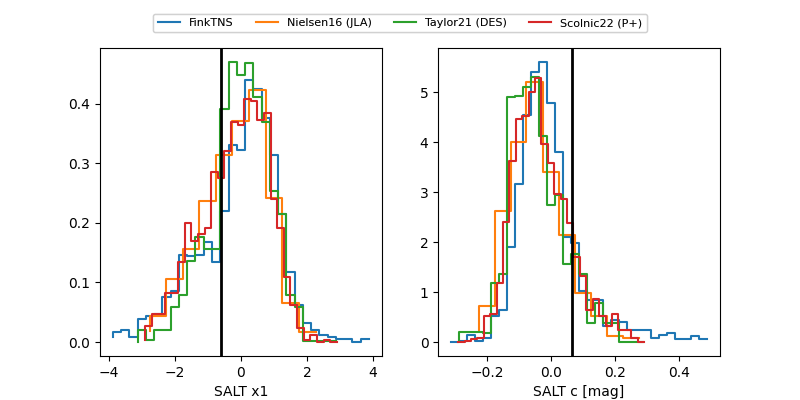

2026ftb
Target 2026ftb at 2026-03-24 11:55
Aliases and brokers:
FINK: link
Lasair: link
ALeRCE: link
TNS: link
YSE: link
alt names
ZTF26aakszwb (ztf,fink_ztf)
2026ftb (tns,yse)
Coordinates:
equatorial (ra, dec) = 219.8635,-22.65619
equatorial (HMS+DMS) = 14:39:27.25,-22:39:22.30
galactic (l, b) = (333.2081,+33.78797)
Flags:
Photometry:
last ztfg=19.41, ztfr=19.32
4 ztfg, 3 ztfr detections
Lightcurve

Visibility


Additional plots
